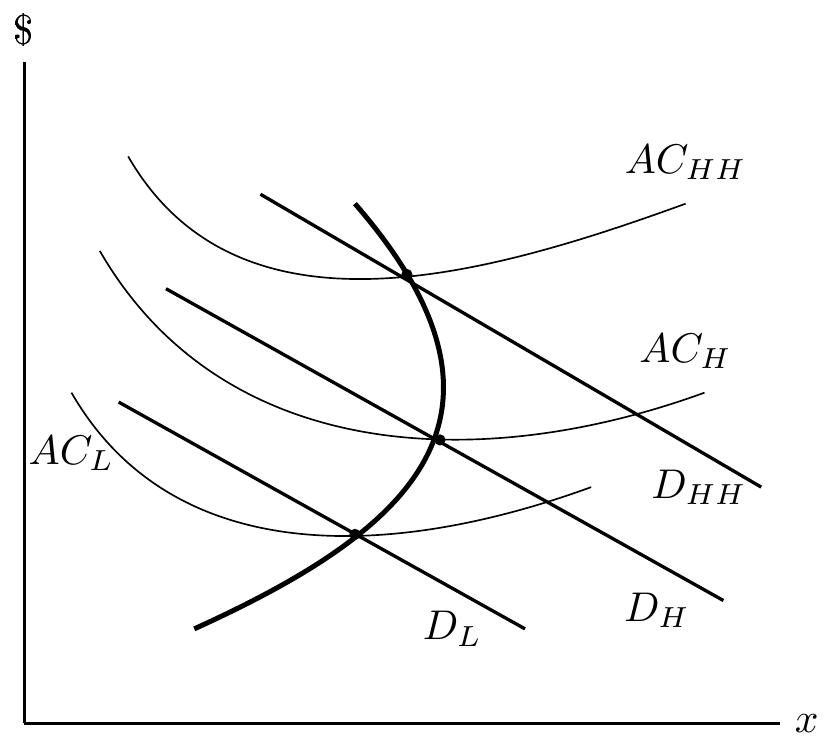

Hospital Objective Functions
Hospital Ownership
Forms of ownership:
- Private not-for-profit: About 60%
- For-profit: About 20%
- State and local gov’t: About 20%
Source: AHA Fast Facts
Non-profit hospitals
What does it mean to be a not-for-profit hospital?
From an economics perspective:
- Hospital assumed to maximize some objective function, \(u(q,z)\), subject to a production constraint
- \(q\) denotes quantity of care and \(z\) denotes quality of care
- Production is constrained by the break-even condition
Non-profit hospitals
What does it mean to be a not-for-profit hospital?
From a practical perspective:
- Profits must be re-invested into the hospital
- Must show “community benefit” (no consensus definition…includes uncompensated care, services to Medicaid, and certain specialized services that are generally unprofitable)
- No taxes! and tax-free bonds
Non-profit hospitals and tax benefits
- $24.6 billion in tax exemptions in 2011
- $62.4 billion in “community benefits”
- Washington Post Article
- NYTimes Article
- Unfortunately still an issue 10+ years later:
What do you think? Are these community benefits measured appropriately?
Public NFP hospitals
- Operate similarly to NFP hospitals but with heavier reliance on federal, state, or local government funding
- Often the “safety net” hospitals of the area
- Large share of uninsured or Medicaid patients
- Less controversy re tax breaks and community benefits
For-profit hospitals
- Owned by private entities, investors, or corporations
- Explicit profit motives…primary objective is to generate financial returns for shareholders or individual owners
- Still provide medical services
- Still subjected to variety of regulations
Objective Functions
What is the objective function?
As economists, the real question is…what is the hospital’s objective function? Does NFP status actually reflect a different objective than FP? Some possible objectives for NFPs include:
- For-profit in disguise
- Output maximizers (provide as much care as possible)
- Social welfare maximizers
- General setup: Utility maximizers (can include social welfare, profit, output, etc.)
Most empirical evidence doesn’t find much of a difference between FP and NFP hospitals, except FPs have higher prices. Why is that?
Utility maximizers
From an economics perspective:
- Hospital assumed to maximize some objective function, e.g. \(u(q,z)\), subject to a production constraint
- \(q\) denotes quantity of care and \(z\) denotes quality of care
- Production is constrained by the break-even condition
Demand and Cost Changes from Increase in Quality
PPC from Demand and Cost Intersection

Predictions from this framework
Assume that the hospital experiences an exogenous increase in the number of insured people in their area. What would be the likely effect of this policy change on hospital quantity? What about an increase in costs?
Profit maximizers
These are easier to study theoretically…just a standard profit maximizing firm.
- \(\pi=P(q)q - C(q),\) where \(q\) denotes quantity of care
- Firm has some market power and so faces a downward sloping demand curve
- Will discuss bargaining power and price negotiations later in this module
Why do we care?
- Significant benefits conferred to hospitals based on not-for-profit status
- Do consumers receive any benefit from this status?
- Let’s discuss this article: Why are nonprofit hospitals focused more on dollars than patients?